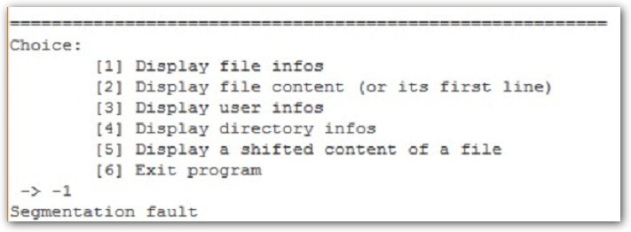

Решение интересного задания на переполнение буфера с root-me.org
Исполняемый файл представляет собой 64-разрядный ELF. Описание задачи выглядит следующим образом: "Find a way to exploit this binary to read the flag in .passwd."Для выполнения этого задания мне понадобилось изучить некоторые особенности работы функции malloc() в уязвимых версиях библиотеки libc, а также составить приличную цепочку ROP (return-oriented programming).
Таким ненормальным программированием я еще не занимался).
Первые шаги
Подключаемся по ssh к машине, на которой расположен исполняемый файл и проводим небольшую разведку.Рис. 1. Разведка
Доступ к файлу .passwd для нашего пользователя запрещен. Сама же программа имеет установленный бит SUID, а значит и доступ к содержимому файла. Также у нас есть доступ к исходникам, но я всегда сначала стараюсь решить задание не прибегая к ним. Тем более исполняемый файл собран с отладочной информацией, что значительно упрощает анализ.
Запустим программу и посмотрим, что она делает.

Рис. 2. Интерфейс программы
Наиболее перспективными кажутся функции для отображения содержимого файла, однако при попытке просмотреть .passwd, используя пункты меню [2] и [5], получаем сообщения о том, что мы не являемся владельцем файла и доступ запрещен.
Попробуем в меню выбора ввести несколько некорректных значений. При вводе отрицательного числа нас ждет первый успех.

Рис. 3. Ошибка при вводе отрицательного значения
Для проведения анализа нам "из коробки" доступно большое количество утилит. Для начала воспользуемся radare2. Используя команду afl, получим список функций.
Рис. 4. Список функций
Среди списка обнаружатся sym.display_shifted_file_content, sym.display_file_content, sym.make_choice (на скриншоте не видно), а также другие функции с говорящими названиями.
Начнем с функции sym.make_choice, т.к. мы уже обнаружили в ней ошибку и нужно понять, что нам это дает.
Рис. 5. Первый фрагмент функции make_choice()
Рис. 6. Второй фрагмент функции make_choice()
На фрагментах кода видно, что адреса функций, отвечающих за работу соответствующих пунктов меню помещаются в стэк. Введенное пользователем значение проходит некоторую фильтрацию (недостаточную, как мы уже знаем) и используется в качестве смещения до адреса нужной функции в стэке. Адрес помещается в регистр rax, а затем происходит вызов функции (call rax). Таким образом, введя некорректное значение, мы можем произвольно (ну почти) считать со стэка некоторое значение и выполнить переход.
Теперь взглянем на функцию display_file_content.
Сначала в стэке резервируется место для локальных переменных и буфера, куда будет сохраняться содержимое запрашиваемого файла, а также осуществляется очистка буфера.
Рис. 6. Первый фрагмент функции display_file_content()
Далее пользователя просят ввести имя файла. Содержимое файла (первые 0x10000 байт) считывается в буфер и осуществляется проверка имени файла. Именно в таком порядке. То есть, даже если просматривать файл нам нельзя, то его содержимое все равно сначала будет считано в стэк.
Рис. 7. Второй фрагмент функции display_file_content()
Теоретически можно запросить содержимое файла .passwd и флаг будет помещен в стэк. На этом этапе я не придумал способа как это можно использовать. Тем не менее, с учетом того, что мы уже знаем про функцию make_choice, это дает нам возможность получить контроль на регистром rip, тем самым изменить ход выполнения программы. Для этого мы можем создать файл, в который запишем произвольные 8 байт, далее вызвать функцию display_file_content и указать на созданный файл. В результате мы поместим в стэк нужное значение, а после, используя баг в функции make_choice, можем записать это значение в регистр rip.
Создадим файл.
Рис. 8. Создание файла с произвольным содержимым
Запустим отладчик и остановимся в функции display_file_content в точке, где содержимое файла считывается в стэк.
Рис. 9. Чтение содержимого файла в буфер
На момент вызова функции fgets в регистре rdi лежит адрес буфера, куда и помещается содержимое файла. Запомним это значение – 0x7ffdce993880.
Далее остановимся в функции make_choice в момент расчёта адреса стэка, где хранится указатель на вызываемую функцию (перед инструкцией call rax).
Рис. 10. Расчет адреса функции соответствующего пункта меню
В регистре rax лежит введенное пользователем число (в примере 2). Мы видим, что адрес, где должен храниться указатель на вызываемую функцию, рассчитывается по формуле:
func_pointer = rbp + entered_value * 8 - 0x40
Значение регистра rbp = 0x7ffdce9a38f0
Зная адрес, по которому лежит содержимое файла (мы запоминали это значение - 0x7ffdce993880), можно рассчитать, какое число нам нужно ввести, чтобы после выполнения инструкции mov в регистре rax оказалось нужное нам значение.
0x7ffdce993880 = 0x7ffdce9a38f0 + n*8 – 0x40
Отсюда, n = -8198
Пробуем.

Рис. 11. Получаем возможность изменить ход выполнения программы
Отлично, мы можем выполнить переход на любой заданный адрес. Теперь нужно каким-то образом обойти ограничения на чтение файла. Тут надо признаться у меня не было конкретного плана, что делать дальше. Точнее была мысль, что можно составить цепочку ROP, для вызова shell'а, но для этого нужно обойти ASLR, а также найти способ контроллировать стэк (ну или поискать другой вектор атаки).
Обходим ASLR
Вообще можно воспользоваться 4-м пунктом меню и просмотреть директорию /proc/self/map_files. Так можно сразу получить "карту" памяти.Рис. 12. Memory map
В этом плане задание меня несколько расстроило. Я решил поискать другой способ обойти ASLR или хотя бы получить адрес библиотеки libc.
На этот раз мое внимание привлекла функция display_shifted_file_content.
Листинг функции достаточно большой. Потому приведу список вызовов внутри функции.
Рис. 13. Список вызовов внутри функции display_shifted_file_content
- Кратко алгоритм можно описать так:
- У пользователя запрашивается имя файла, содержимое которого требуется отобразить;
- Выделяется необходимый объем памяти;
- У пользователя запрашивается значение, которое будет прибавляться к каждому байту содержимого файла;
- Выполняются «проверки безопасности»
- Содержимое файла (по размеру выделенной памяти) считывается в буфер
В материалах задания есть фрагмент, описывающий структуру блока памяти, выделяемого функцией malloc() (описание справедливо для определенных версий библиотеки).
Рис. 14. Описание струкруры чанка памяти, выделяемого функцией malloc()
Мое внимание привлек тот факт, что функция malloc() возвращает адрес, который указывает на поле fd и после освобождения блока памяти по этому адресу будет находиться двусвязный список свободных чанков.
Попробуем выделить несколько блоков памяти и посмотреть, какие адреса сохранятся после освобождения памяти. Для этого установим брейкпоинт в функции display_shifted_file_content на инструкции освобождения памяти.
Рис. 15. Дамп памяти после освобождения первого чанка
Рис. 16. Дамп памяти после освобождения второго чанка
Первый чанк функция malloc() выделила по адресу 0x556f7196ca60. После освобождения, первые 8 байт "обнулились". Однако после освобождения 2-го чанка в первых 16 байтах сохранились 2 указателя. При этом адрес (в примере - 0x00007f0624259bb8) принадлежит одной из секций библиотеки libc. Секции имеют фиксированное смещение относительно базового адреса, значит мы можем вычислить это смещение для нашего случая и использовать его в будущем. Проверим текущий адрес библиотеки.
Рис. 17. Адрес библиотеки libc
Видим, что базовый адрес библиотеки libc равен 0x00007f0623e95000. Теперь мы можем рассчитать смещение до нужной секции (точнее до нужной страницы памяти), по следующей формуле:
offset = (leaked_address & 0xFFFFFFFFFFFFF000) - libc_base_address
Младшие 12 бит обнуляем, т.к. страницы памяти выровнены по 4кб границе.
Тогда,
offset = 0x00007f0624259000 - 0x00007f0623e95000 = 0x3C4000
Запустив программу несколько раз, удеждаемся, что смещение фиксировано.
Получается, если мы сможем добиться “утечки” адреса, мы сможем рассчитать базовый адрес библиотеки libc. С учетом того, что мы уже знаем, добиться этого должно быть несложно. План такой:
- Создать 2 файла размерами 0x16 и 0x28 байт (чтобы программа выделила 2 разных блока памяти);
- Запустить программу, дважды вызвать пункт меню [5], и прочитать по очереди оба файла;
- Вызвать пункт меню [5] в третий раз, однако теперь, когда пользователю предложат ввести значение, которое будет прибавляться к каждому байту содержимого файла, нужно уменьшить размер файла до 8 и меньше байт. Так как в выделенном блоке памяти первые 16 байт будут хранить указатели на список свободных блоков памяти, то содержимое файла размером менее 8 байт, не затрет указатель и при выводе содержимого, произойдет утечка.
Используя команду
mkfifo /dev/shm/challenge/fifo
создадим пайп, а команду
./ch6 <> /dev/shm/challenge/fifo &
запустим приложение в фоновом режиме.
Для взаимодействия можно использовать команду echo. Например, чтобы вызвать пункт меню [6], нужно ввести:
echo -n -e "6\n" > /dev/shm/challenge/fifo
Таким образом получим возможность изменить содержимое (и размер) файла в нужный момент времени.
Рис. 18. Утечка адреса
Такой вывод не очень информативен (непечатные символы не отображаются), но главное - удалось добиться утечки адреса. Теперь для удобства (и в последующем для автоматизации) можно воспользоваться модулем pwntool для python.
Тот же результат с использованием pwntools
Рис. 19. Утечка адреса (pwntool)
Итак, на данный момент мы можем заставить программу перейти на заданный адрес и можем получить адрес библиотеки libc, а значит мы можем вызвать любую функцию библиотеки. Но пока есть 2 существенных ограничения - нет возможности передать произвольные аргументы функции и нет контроля над ходом выполнения программы. Чтобы обойти эти ограничения (и составить цепочку ROP для получения шела или вывода содержимого файла) необходимо получить контроль над стэком. Частичный контроль стэка у нас есть (благодаря функции display_file_content()), но не в том кадре, где мы можем выполнить переход на заданный адрес. Нужно найти способ переписать нужный кадр стэка или поискать другой вектор атаки.
Финишная прямая
После некоторого времени проведенного за отладкой, я обратил внимание на одну любопытную деталь в функции make_choice(). Еще раз взгрянем на состояние регистров в момент вызова выбранного пункта меню.Рис. 20. Расчет адреса функции соответствующего пункта меню (снова)
У вызываемых функций нет аргументов, а в регистре rdi (через который обычно передается первый аргумент) содержится адрес, который находится в пределах текущего кадра стэка. То есть если мы выполним переход на какую-нибудь функцию из библиотеки libc, то первым аргументом будет передан этот адрес. Так ведь есть замечательная функция gets! Она практически идеально нам подходит - принимает всего 1 аргумент и этот аргемент является адресом буфера, в который будет помещены данные введенные пользователем! А значит, направив выполнение на эту функцию, мы запишем в стэк все, что введем (есть конечно небольшое ограничение, т.к. функция завершает прием данных при получении символа ‘\n’). Это позволит нам вызвать переполнение стэка, переписать адрес возврата и составить цепочку ROP.
Для начала в отладчике выполним переход на функцию gets и введем специально сгенерированный шаблон для определения смещения до адреса возврата. Есть много способов создания такого шаблона, я воспользуюсь online генератором.
Рис. 21. Использование шаблона для подбора смещения до адреса возврата

Рис. 22. Онлайн генератор шаблона
Видим, что смещение в стэке до адреса возврата равно 19. Отлично. Теперь можно переходить к составлению цепочки ROP.
Первое, что я попробовал сделать это составить цепочку для получения шелла. Вызвать /bin/bash у меня получилось, однако доступа к содержимому файла .passwd, все равно не было, не смотря на бит SUID.
Ну что ж, займемся ненормальным программированием. Используя ROP, напишем программу, которая открывает файл .passwd, читает его содержимое и выводит на экран.
Для начала запустим утилиту ROPgadget и посмотрим какие "инструкции" ROP мы можем найти в библиотеке libc.
Рис. 23. Результат работы ROPgadget
Как видно, библиотека libc дает нам огромные возможности по обратно-ориентированному программированию! Мы можем записывать значение регистра по произвольному адресу, инициализировать аргументы и выполнять системные вызовы.
Для чтения файла и вывода его содержимого на экран нам нужны функции fopen, fgets и puts. Узнать адрес нужной функции можно, используя команду:
readelf -s ./lib/libc.so.6 | grep fopen
Рис. 24. Поиск смещения до функции fopen
После того как все адреса нужных функций и ROP-инструкций получены, можно приступать непосредственно к программированию. В результате у меня получился такой код:
#------------ generate rop chain----------
padding = b'\x41'*19 # offset to ret address = 19
zero = struct.pack("<Q", 0)
func_exit = struct.pack("<Q", libcBase + 0x03a030)
func_fopen = struct.pack("<Q", libcBase + 0x06dd70)
func_fopen = struct.pack("<Q", libcBase + 0x06dad0)
func_fopen = struct.pack("<Q", libcBase + 0x06f690)
p = b''
p += padding
p += struct.pack("<Q", libcBase + 0x0000000000001b92) # pop rdx ; ret
p += struct.pack("<Q", libcBase + 0x00000000003c4080) # @ .data // file_name
p += struct.pack("<Q", libcBase + 0x0000000000033544) # pop rax ; ret
p += b'.passwd\x00'
p += struct.pack("<Q", libcBase + 0x000000000002e19c) # mov qword ptr [rdx], rax ; ret
p += struct.pack("<Q", libcBase + 0x0000000000001b92) # pop rdx ; ret
p += struct.pack("<Q", libcBase + 0x00000000003c4088) # @ .data + 8 // mode
p += struct.pack("<Q", libcBase + 0x0000000000033544) # pop rax ; ret
p += b'r\x00\x00\x00\x00\x00\x00\x00'
p += struct.pack("<Q", libcBase + 0x000000000002e19c) # mov qword ptr [rdx], rax ; ret
p += struct.pack("<Q", libcBase + 0x00000000000202e8) # pop rsi ; ret
p += struct.pack("<Q", libcBase + 0x00000000003c4088) # @ .data + 8 // "r"
p += struct.pack("<Q", libcBase + 0x0000000000001b92) # pop rdx ; ret
p += zero
p += struct.pack("<Q", libcBase + 0x0000000000021102) # pop rdi ; ret
p += struct.pack("<Q", libcBase + 0x00000000003c4080) # @ .data = ".passwd"
p += func_fopen
p += struct.pack("<Q", libcBase + 0x0000000000001b92) # pop rdx ; ret
p += struct.pack("<Q", libcBase + 0x00000000003c4090) # @ .data + 16 // handle
p += struct.pack("<Q", libcBase + 0x000000000002e19c) # mov qword ptr [rdx], rax ; ret
p += struct.pack("<Q", libcBase + 0x00000000000202e8) # pop rsi ; ret
p += struct.pack("<Q", libcBase + 0x00000000003c4090) # @ .data + 16 // handle
p += struct.pack("<Q", libcBase + 0x0000000000021102) # pop rdi ; ret
p += struct.pack("<Q", libcBase + 0x00000000003c4090) # @ .data + 16 // handle
p += struct.pack("<Q", libcBase + 0x00000000000a5da0) # mov rdx, qword ptr [rsi] ; mov qword ptr [rdi], rdx ; ret
p += struct.pack("<Q", libcBase + 0x00000000000202e8) # pop rsi ; ret
p += b'\x50\x00\x00\x00\x00\x00\x00\x00'
p += struct.pack("<Q", libcBase + 0x0000000000021102) # pop rdi ; ret
p += struct.pack("<Q", libcBase + 0x00000000003c40a0) # @ .data + 32 // dest_buffer
p += func_fopen
p += struct.pack("<Q", libcBase + 0x00000000000202e8) # pop rsi ; ret
p += zero
p += struct.pack("<Q", libcBase + 0x0000000000021102) # pop rdi ; ret
p += struct.pack("<Q", libcBase + 0x00000000003c40a0) # @ .data + 32 // buffer
p += struct.pack("<Q", libcBase + 0x0000000000001b92) # pop rdx ; ret
p += zero
p += func_fopen
p += func_exit
p += b'\n\x00\x00\x00\x00\x00\x00\x00'
Этот фрагмент кода формирует payload, который нужно передать функции gets.
И да, заниматься отладкой ROP кода, то еще удовольствие) Как бы то ни было, код работает и успешно считывает и выводит содержимое файла .passwd.
Итог
Итак, в ходе выполнения задания:- Обнаружен баг в функции make_choice(), позволяющий направить ход выполнения программы на произвольный адрес;
- Недостаток в алгоритме функции display_file_content, который заключается в том, что содержимое защищаемого файла считывается в буфер ПЕРЕД проверками разрешений;
- Недостаток в алгоритме функции display_shifted_file_content, из-за которого в промежутке между выделением памяти и чтением содержимого файла, у пользователя есть возможность изменить его содержимое и размер;
- Недостаток в алгоритме функции malloc, который при определенных обстоятельствах может привести к утечке адреса (а также к heap overflow);
Модуль pwntool для python позволяет полность автоматизировать процесс эксплуатации. В итоге получился такой скрипт.
И результат его работы:
Рис. 25. Результат